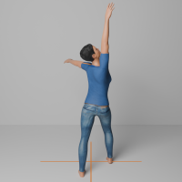

An index of open-source tasks for measuring movement imagery ability (how well individuals can imagine performing movements), designed to support researchers and clinicians with standardised, ready-to-use instruments.
Our goal is to enable the systematic collection of normative data across different aspects of movement imagery ability. All tasks are open-source and can be readily adapted for specific populations or translated into other languages.
Five validated open-source tasks covering different dimensions of movement imagery ability. Click on a task name to jump to its full description.
| Task | Type | Dimension(s) | Measure(s) | Imagery Instruction |
Exclusion Criteria |
Equipment | Duration | Reference |
|---|---|---|---|---|---|---|---|---|
| CRFT | Mental Chronometry | ManipulationMaintenance | Deviation in difficulty–duration effects between execution and imagery | Explicit: IVI + KIN |
Task-related motor impairment (dominant hand) | Computer + touchscreen + stylus | 10–15 min | Czilczer et al. (preprint) |
| iFST | Mental Chronometry | Maintenance | Discrepancy between execution and imagery durations | Explicit: IVI + KIN |
Finger individuation impairment | Standard computer | 10–15 min | Moreno-Verdú et al. (2026) |
| HLJT | Mental Rotation | Manipulation | Accuracy, Response time, Biomechanical constraints effect | Implicit: IVI + KIN |
Right-left disorientation | Standard computer | 15–20 min | Moreno-Verdú et al. (2025) |
| MBRT | Mental Rotation | Manipulation | Accuracy, Response times | Implicit: IVI + KIN |
Right-left disorientation | Standard computer | 10 min | Dahm et al. (2022) |
| FPJT | Imagery–Stimulus Comparison | ManipulationMaintenanceGenerationInspection | Accuracy, Response time | Explicit: IVI + KIN |
Right-left disorientation; Hearing impairment | Computer + audio | 20 min | Czilczer et al. (preprint) |
In-depth descriptions of each task including methodology, design rationale, and links to repositories and publications.
The Chronometric Radial Fitts' Task (CRFT; Czilczer et al., preprint), adapted from the Virtual Radial Fitts' Task (e.g., Caeyenberghs et al., 2009), was developed to address limitations of using deviations from execution durations as an indicator of movement imagery ability. By incorporating Fitts' law (Fitts, 1954), it assesses the extent to which the lawful relationship between movement difficulty and duration is preserved in imagery relative to execution, thereby requiring participants to integrate movement constraints into their mental simulations.
After a comprehension check and familiarisation, participants complete two blocks: execution and imagery. Therein, they execute or imagine tapping between a central circle and radially arranged targets with the dominant hand as quickly and accurately as possible. Each executed or imagined tap is accompanied by a spacebar press with the non-dominant hand. Movement difficulty is manipulated according to Fitts' law, with five difficulty levels presented repeatedly and in random order. Taps are not actively processed, but a touchscreen monitor is recommended as a sturdy tapping surface.
The iFST is adapted from various sequence-learning paradigms frequently used to study motor control (Doyon et al. 1997). Participants are asked to type and imagine finger sequences, and the time employed is measured (Dahm et al. 2023). During imagery, participants must simulate pressing the keys until the sequence is completed, hence the paradigm assesses the ability to maintain movement imagery.
This version of the task, as developed by Moreno-Verdú et al. (2026), consists of typing or imagining different 8-digit sequences with the index, middle, ring and little fingers of the dominant hand. The implementation employs two types of sequences that differ in complexity (based on the number of directional changes, with an equivalent number of digit repeats). This allows observation of sequence complexity effects on both execution and imagery times as a fundamental effect of the paradigm.
The HLJT was first introduced by Cooper and Shepard (1975), who proposed that participants determine whether a visually presented hand is left or right by moving a mental "phantom" of one of their own hands into the portrayed position and then comparing its imagined appearance against that of the externally presented hand. Many variants of the task have subsequently been examined in the context of studies of motor imagery.
The "biomechanical constraints effect" (where hands presented in more physically achievable medial rotations are processed faster than those requiring difficult lateral rotations) is considered a hallmark of motor imagery deployment in this task.
This version, as developed by Moreno-Verdú et al. (2025), presents hands at 8 angles (0° through 315° in 45° increments) in palmar or dorsal view. The implementation has been verified to yield equivalent results across different response effectors (feet, bimanual, or unimanual), making it suitable for participants with impairments in a specific effector.
The mental body rotation task is a cognitive test used to assess a person's ability to mentally simulate changes in body position (Steggemann et al., 2011). Participants are shown images of human figures in various orientations and are asked to judge whether the figure's left or right hand (or foot) is raised (Dahm et al., 2022). To do this correctly, they either mentally rotate their own body or the pictured figure in order to establish a perspective overlap.
Response times are typically longer the greater the rotational angle. For mental rotations on the horizontal axis, responses take longer for head-down pictures than for head-up pictures. On the vertical axis, responses take longer for face-to-face pictures than for back-view pictures (which are already aligned with the participant's own perspective).
This version, as developed by Dahm et al. (2022), presents 64 gender-neutral avatar images of a human figure including back and front view perspectives with either a raised foot or hand. Rotational angles include head-up (−45°, 0°, 45°) and head-down (−135°, 180°, 135°) conditions. The main block is preceded by eight familiarisation trials to verify task comprehension.

In the Final Position Judgement Task (FPJT), participants imagine executing a sequence of auditorily instructed movements and then judge whether the image of a human figure matches their imagined final position. The FPJT adapts earlier tasks involving final position judgements (e.g., Madan & Singhal, 2013; Naito, 1994; Schott, 2013).
The task begins with familiarisation with the auditory and visual stimuli, a comprehension check, and practice trials. Participants then complete 32 trials in random order. With eyes closed, they hear four to seven auditory instructions per trial, each specifying a movement of the head, upper body, or a limb (left or right arm or leg). Visual rehearsal during imagery is associated with higher accuracy and shorter response times, whereas reliance on verbal rehearsal is associated with slower responses (Czilczer et al., preprint).
The primary focus of this platform is on behavioural tasks. However, self-report questionnaires have been widely used in research and applied contexts to assess imagery generation ability.
A dedicated repository for movement imagery questionnaires (including scoring guidelines and translations) is available below. If you are interested in using questionnaires alongside the behavioural tasks provided here, please refer to this resource.
We aim to establish normative data to support interpretation of individual task scores and inform clinical applications of movement imagery practice.
Contributions from researchers and practitioners who have used any of the experiment files are greatly appreciated. To contribute, please email the corresponding author at Carla.Czilczer@uibk.ac.at with the attached data, including any relevant details about your sample (e.g., specific clinical populations).
If you use the MIAT Platform or any of its tasks in your research, please cite the platform preprint as well as the relevant task-specific reference(s) listed below.
Platform reference
Czilczer, C., Moreno-Verdú, M., Dahm, S. F., & Hardwick, R. M. (preprint). The Movement Imagery Ability Task (MIAT) Platform: An open-science resource for standardised assessment of movement imagery ability. OSF Preprints. https://doi.org/10.31234/osf.io/9xjfb_v1
| Task | Reference | DOI |
|---|---|---|
| CRFT | Czilczer, C., Moreno-Verdú, M., Dahm, S. F., & Hardwick, R. M. (preprint). The Chronometric Radial Fitts' Task (CRFT). OSF Preprints. | 10.31234/osf.io/c2mw6_v2 |
| iFST | Moreno-Verdú, M., Czilczer, C., Dahm, S. F., & Hardwick, R. M. (2026). The Imagined Finger Sequence Task (iFST). Behavior Research Methods. | 10.3758/s13428-026-03002-3 |
| HLJT | Moreno-Verdú, M., Czilczer, C., Dahm, S. F., & Hardwick, R. M. (2025). The Hand Laterality Judgement Task (HLJT). Neuroscience. | 10.1016/j.neuroscience.2025.02.056 |
| MBRT | Dahm, S. F., et al. (2022). The Mental Body Rotation Task (MBRT). Brain Sciences. | 10.3390/brainsci12111500 |
| FPJT | Czilczer, C., Moreno-Verdú, M., Dahm, S. F., & Hardwick, R. M. (preprint). The Final Position Judgement Task (FPJT). PsyArXiv. | osf.io/preprints/psyarxiv/4sw6h_v1 |
This platform is developed as a collaboration between research groups at the following institutions.